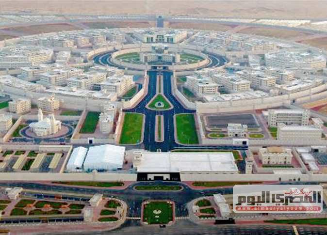
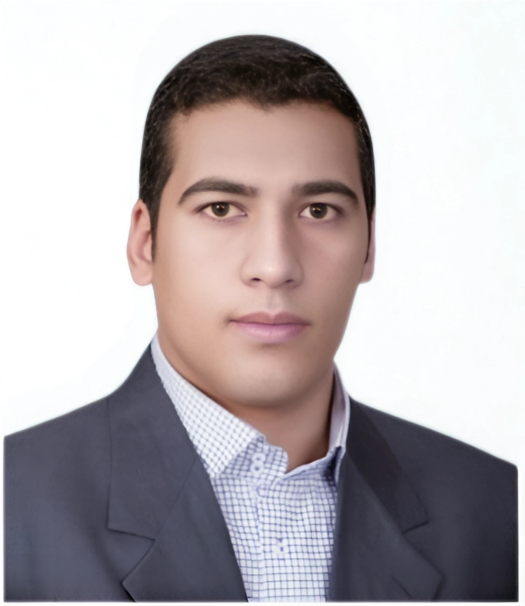
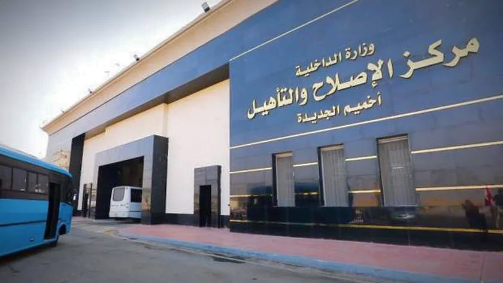
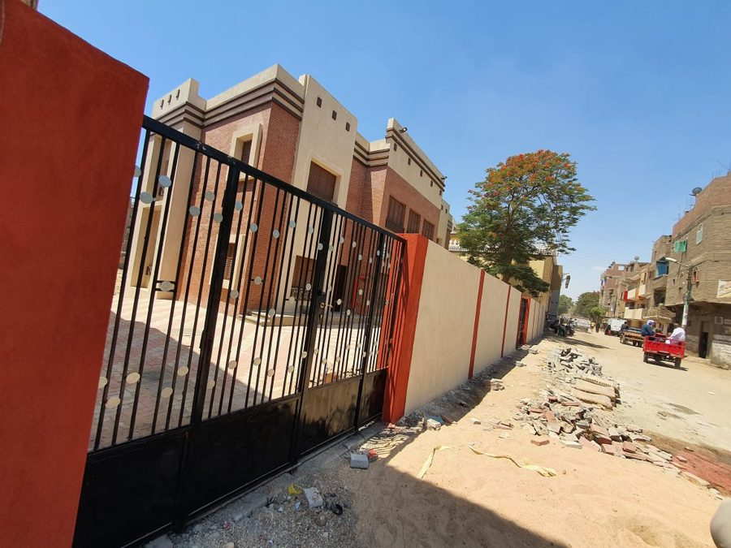
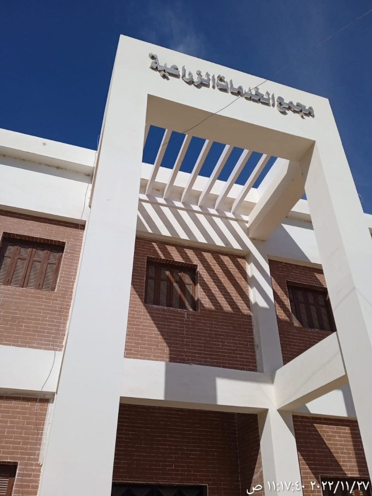
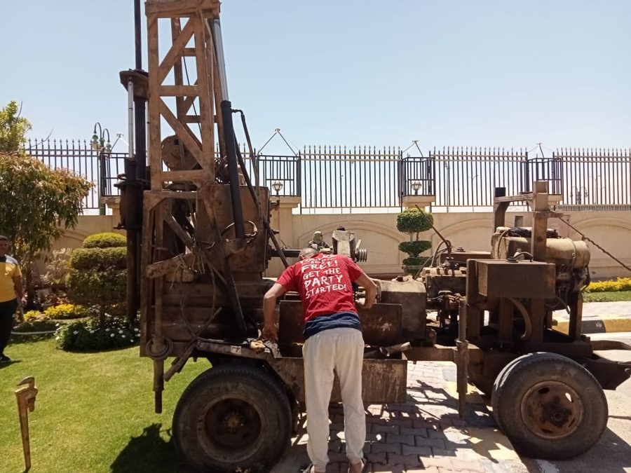
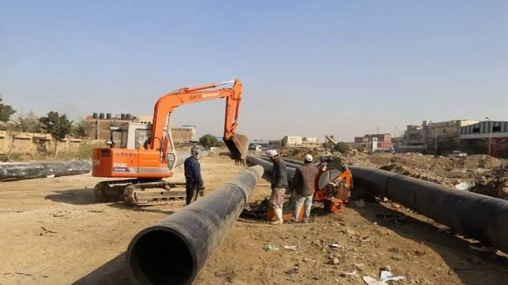
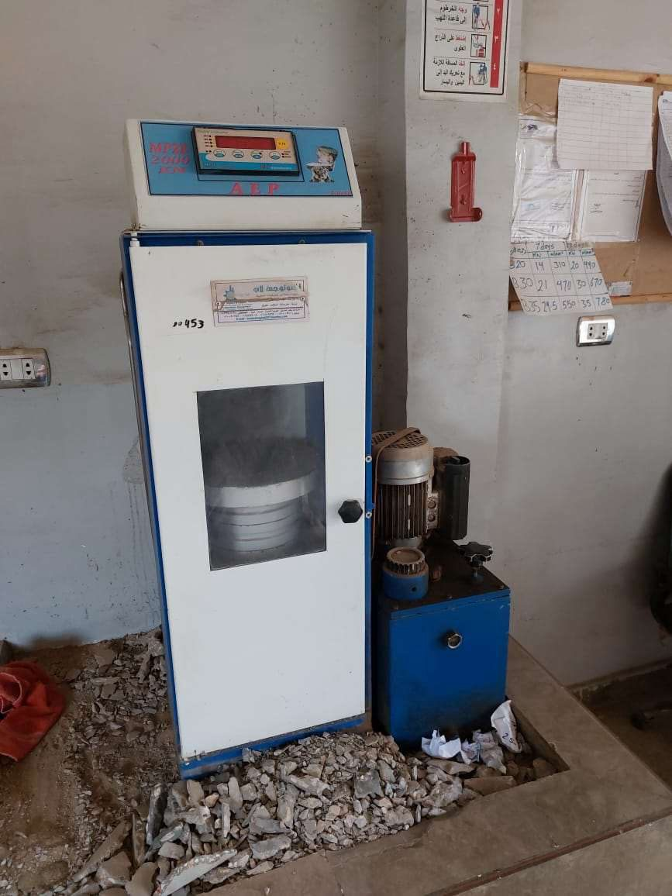
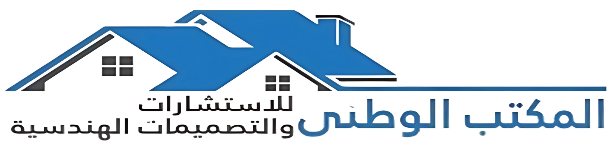
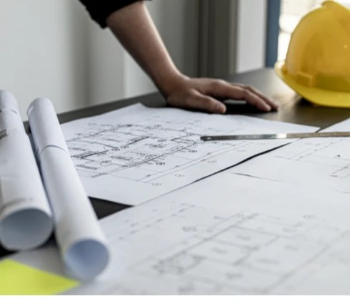

Government
General Governmental Services Complex — Sohag
Construction of major governmental buildings delivered under the direction of the Governor of Sohag.
Building structure…
Associate Professor · Consultant Structural Engineer
Advancing structural engineering through research, education and practice — from fatigue analysis of reinforced concrete bridges to the supervision of landmark public infrastructure across Egypt.
Years of Experience
Projects Supervised
Peer-Reviewed Publications
Haya Karima Projects

Ph.D. Structural Engineering
Hokkaido University, Japan
About
Associate Professor and Consultant Engineer in Civil & Structural Engineering with 17 years of academic, research, and professional consulting experience. Specialized in reinforced concrete structures, fatigue analysis, structural design, quality control, soil investigation, and construction project supervision.
Committed to advancing engineering education, applied research, and sustainable infrastructure through innovative teaching, high-quality publications, and practical engineering solutions.
Hokkaido University, Japan
Fatigue analysis of RC slabs with plain bars and FRP strengthening based on the bridging stress degradation concept — computational fatigue-life prediction under moving loads using Marc/Mentat and Fortran.
Assiut University, Egypt
Thesis: Shear behavior of high-strength fiber-reinforced concrete corbels.
Assiut University, Egypt
Graduated with Distinction with Honors — ranked 1st in the Civil Engineering Department. Graduation project: Reinforced Concrete Structures (Excellent).
Career
Sohag University, Egypt
Teaching and assessing undergraduate courses with emphasis on practical design skills and theoretical foundations in Reinforced Concrete Design and Structural Analysis.
Sohag University, Egypt
Core civil/structural instruction and curriculum development; published research on RC behavior, finite-element analysis, structural strengthening, and steel girder stability.
Sohag University, Egypt
Taught reinforced concrete design until receiving the Ph.D. scholarship to Hokkaido University, Japan.
Assiut University, Egypt
Assisted in teaching reinforced concrete design while completing M.Sc. research.
El-Watany Engineering Consulting Office
Leading a full-service civil engineering consulting office — design, analysis, construction project management, and technical documentation.
Governorate of Sohag
Engineering consultation for governmental buildings, fire stations, urban markets, parking facilities, bridges, and infrastructure — compliance, cost effectiveness and quality.
Engineering Consulting Office, Sohag University
Supervised hundreds of construction projects across the full lifecycle — geotechnical investigations, cost estimation, on-site quality control, and contract compliance.
JELCOM Training Center, Assiut
Trainer for the CSI structural suite (SAP2000, SAFE, ETABS) — in-class and online delivery.
Portfolio
Over 200 supervised projects across residential, commercial, institutional and infrastructure sectors — including 36 projects delivered with the Armed Forces under the national Haya Karima (Decent Life) initiative in Sohag.

Construction of major governmental buildings delivered under the direction of the Governor of Sohag.

Engineering supervision and quality control for the new correctional and rehabilitation facility in Sohag.

Design and supervision of schools and public buildings across Sohag — Al Maraghah, Gerga, Tima, Al Minshah, Al Balyana and Akhmim.

Design and supervision of 8 fire stations, 5 urban markets and 7 parking facilities in cities across Sohag — plus full design of El-Foaad International Language School.

The authority approved by the Egyptian Armed Forces to carry out soil boring works for Haya Karima projects in Sohag.

Design and supervision of water and wastewater distribution systems across seven cities in the Sohag governorate.

Management systems for materials testing and quality assurance — more than 11 testing laboratories serving Haya Karima projects in Sohag.
Structural design and supervision of the Olympic stadium and several faculty buildings at Sohag University, and supervision of the reinforced concrete Thaqafa–Sohag bridge.
Research
Research addressing critical challenges in reinforced concrete behavior, fatigue analysis, and advanced material strengthening — published in journals including Engineering Structures and the Journal of Advanced Concrete Technology.
Consulting Practice
A specialist building-services engineering consultancy offering a full multi-disciplinary approach to every stage of the project lifecycle — from design through construction and into operation. Dr. Drar leads the office as CEO & General Manager.

Structural design, steel structures, architectural design and interior decoration.
Roads and bridges, utility services, ports, and surveying works.
Revit modeling, 3ds Max visualization, analysis and calculation notes, time and cost management.

Structural repair, environmental studies, soil boring reports, and contractor assistance.
Pipe work, centralized air conditioning, fire fighting, and electrical installations.
Site supervision and coordination, feasibility studies, quality control and quality assurance.
Recognition
Ranked 1st in the Civil Engineering Department, Assiut University (B.Sc., 2007)
Fully funded Ph.D. scholarship to Hokkaido University, Japan (2013)
Appointed Engineering Consultant to the Governor of Sohag for infrastructure assignments
Authorized by the Egyptian Armed Forces for geotechnical investigations and quality-control activities
Consultant Engineer certificate in the design of concrete structures
200+ construction projects supervised across residential, commercial, institutional and infrastructure sectors
Get in Touch
Available for academic collaboration, structural consulting, design review, geotechnical investigation, and construction supervision engagements.
Reference contact details available upon request.